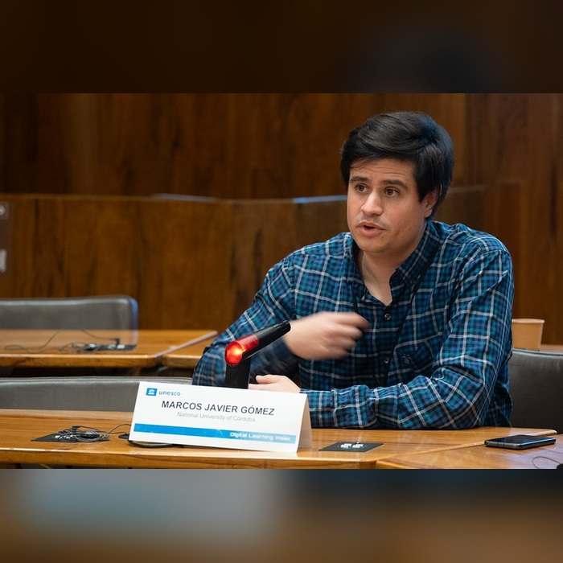

¿Para qué aprender ciencias de la computación si ya tenemos la IA?
Dr. Marcos Gómez
Las Jornadas comienzan en
Estas jornadas son la continuidad de las Jornadas Argentinas de Didáctica de la Programación (JaDiPro) organizadas en 2018 y 2019 en la Universidad Nacional de Quilmes y la Universidad Nacional de Córdoba. En la edición de 2021 se extendió el área de interés a la didáctica de las Ciencias de la Computación en general. A partir de entonces, en el 2021, las JADiCC se llevaron en modalidad virtual y fueron organizadas por la Fundación Sadosky. En el año 2022 se llevó a cabo en la Universidad Nacional del Nordeste en modalidad presencial. La Universidad Nacional del Comahue fue sede en 2023. En el año 2024 la Universidad Nacional de Río Cuarto fue la encargada de organizarlas en modalidad virtual. En 2025, fue sede designada la Universidad Nacional de San Luis, realizadas bajo la modalidad híbrida.
Este 2026 será sede de este evento la Facultad de Ciencia y Tecnología, dependiente de la Universidad Autónoma de Entre Ríos, Sede Concepción del Uruguay.
Estas jornadas se estructuran en torno a conferencias, charlas, paneles de discusión, talleres y presentación de trabajos académicos, incluyendo artículos científicos, relatos de experiencias docentes y demostraciones de herramientas. Se trata de un evento de gran relevancia para docentes de todos los niveles educativos, investigadores y diseñadores de políticas públicas vinculadas a la enseñanza de las Ciencias de la Computación.
La elección de la Facultad de Ciencia y Tecnología - UADER Sede Concepción del Uruguay como sede de la edición 2026 representa una valiosa oportunidad para fortalecer el desarrollo académico, científico y educativo en el campo de la didáctica de la computación, así como para posicionar institucionalmente a nuestra Facultad en el ámbito nacional.
Disertantes: Andrea González (E.E.T. Nº 3 “Dr. Miguel Ángel Marsiglia”) · Camilo Fervenza (E.E.T. Nº 3 “Dr. Miguel Ángel Marsiglia”, Anexo F.P.)
Inscripción ↗Disertantes: Francisco Bavera y Benjamín Bavera (Universidad Nacional de Río Cuarto)
Inscripción ↗Disertantes: Viviana Bourdetta · Evelyn Curuchet · Alejandro Picart · Axel Blanc (UADER FCyT)
Inscripción ↗Disertantes: Gonzalo Fernández (UNQ) y Christian Cossio-Mercado (Departamento de Computación, Facultad de Ciencias Exactas y Naturales, UBA)
Inscripción ↗Disertantes: Gonzalo Fernández (UNQ) y Christian Cossio-Mercado (Departamento de Computación, Facultad de Ciencias Exactas y Naturales, UBA)
Inscripción ↗Disertantes: Gonzalo Fernández (UNQ) y Christian Cossio-Mercado (Departamento de Computación, Facultad de Ciencias Exactas y Naturales, Universidad de Buenos Aires)
Inscripción ↗Disertantes: Emilce Castillo · Tomas Viñuela · Alejandro Perez · Melina Occhiuzzo Antognetti · Daniel Gering (UADER FCyT)
Inscripción ↗Disertantes: Eduardo Beckman (E.E.T. N.º 2 Francisco Ramírez) · Marcelo D. Calvi (E.E.T. N.º 2 Francisco Ramírez) · Itatí Cislaghi (Esc. Normal Rep. Oriental del Uruguay)
Inscripción ↗Disertantes: Luisina Pocay · Juan Pablo Amarillo · Juliana Gericke (Distrito del Conocimiento)
Inscripción ↗Dr. Marcos Gómez
Contenidos, prácticas y evaluación en la formación informática
Escuela, universidad, territorio y divulgación
Disertantes: Débora Cingolani y Rocío González (Fundación Sadosky)
Inscripción ↗Disertante: Dr. Francisco Bavera (UNRC)
Inscripción ↗Disertante: Dra. Emilia Echeveste (UNC)
Inscripción ↗Disertantes: Marcela Rivero (CEA-UNC) y Julián Fernández (Mi3dp)
Inscripción ↗Saberes, alfabetización y mirada crítica
Currículo, didáctica y formación docente
Disertantes: Bourdetta, Curuchet, Miño, Picart
Inscripción ↗Disertantes: Lic. Julián Dabbah y Dr. Marcos Gómez
Inscripción ↗Disertantes: Valentín Basel, Cristian Rojo, Virginia Brassesco, Emilia Echeveste, Natalia Zalazar y Cecilia Martínez
Inscripción ↗Disertantes: Mec. Rosario Schunk y Mg. Enzo Sguillaro (Ceibal, Uruguay)
Nuevas prácticas, herramientas y criterios de evaluación
Robótica, indagación y propuestas lúdicas
Disertante: Dr. Marcos Gómez
Inscripción ↗Secuencias, estrategias y desafíos iniciales
Tecnologías abiertas, recursos accesibles e inclusión
Disertantes: Lic. Gonzalo Fernández y Dr. Christian Cossio-Mercado
Inscripción ↗
Dr. Marcos Gómez

Mec. Rosario Schunk y Mg. Enzo Sguillaro (Ceibal, Uruguay)
Organizan
Avalan JADiCC 2026